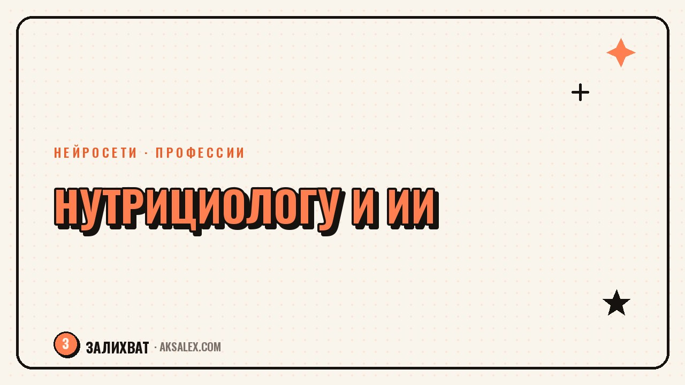

Нейросети для нутрициолога: меню и клиенты

Если ты нутрициолог или консультант по питанию, ты знаешь, сколько времени съедает рутина: расчёт КБЖУ, подбор блюд под ограничения клиента, переписка в мессенджере, посты для соцсетей. На саму консультацию и разбор анализов остаётся меньше сил, чем хотелось бы. Нейросети не заменят твою экспертизу и не поставят диагноз, но они умеют закрывать черновую часть работы - считать, подбирать варианты, формулировать текст - быстрее, чем ты делаешь это вручную. Разберём, где именно они встают в рабочий процесс нутрициолога и что с ними можно сделать уже сегодня.
Зачем нутрициологу нейросети
Работа нутрициолога состоит из двух частей: экспертная (анализ состояния клиента, подбор стратегии, контроль динамики) и техническая (расчёты, таблицы, тексты, переписка). Нейросети не трогают первую часть - решения всё равно принимаешь ты, опираясь на анализы и анамнез. Зато вторую часть они забирают почти целиком, и именно она обычно крадёт вечер после рабочего дня.
Практическая выгода в цифрах простая: составление меню на неделю вручную занимает час-полтора, с нейросетью - 10-15 минут на черновик, который остаётся проверить и подправить. Ответ клиенту на типовой вопрос про замену продукта пишется за секунды вместо пяти минут поиска в голове подходящей формулировки. За месяц это легко несколько освобождённых часов, которые можно потратить на новых клиентов или на отдых.
Что нейросеть точно не должна делать
Она не ставит диагнозы, не назначает лечебные диеты при реальных заболеваниях и не заменяет анализ крови и консультацию врача. Все цифры по калориям, нормам нутриентов и ограничениям по медицинским показаниям проверяешь ты сам - нейросеть предлагает черновик, а не финальное решение.
Расчёт КБЖУ и состава меню
Самая частая задача - перевести идею меню в цифры: белки, жиры, углеводы, калорийность каждого блюда и всего дня. Нейросеть справляется с этим, если задать точный запрос: вес порции, способ приготовления, ингредиенты по отдельности. Чем конкретнее вопрос, тем точнее будет расчёт - и тем меньше потом придётся пересчитывать руками.
- Опиши блюдо по ингредиентам и граммовке, а не только названием
- Уточни способ готовки - варка, жарка на масле, запекание меняют калорийность
- Попроси развернуть расчёт по БЖУ отдельно, а не только итоговую калорийность
- Сверяй результат с проверенной базой хотя бы по паре позиций в неделю
- Сохраняй удачные расчёты в шаблон, чтобы не повторять запрос с нуля
Полезная привычка - просить нейросеть не только посчитать, но и предложить два-три варианта замены ингредиента с похожим КБЖУ. Это экономит время, когда у клиента аллергия или он просто не ест конкретный продукт: вместо того чтобы пересчитывать вручную, ты получаешь готовые альтернативы и выбираешь подходящую.
Планы питания под конкретного клиента
Когда расчёт готов, следующий шаг - собрать из блюд план на неделю с учётом предпочтений, бюджета и доступного времени на готовку клиента. Здесь нейросеть удобна как генератор черновиков: задаёшь вводные (сколько приёмов пищи, аллергии, нелюбимые продукты, бюджет) и получаешь структуру меню, которую остаётся адаптировать под конкретного человека.
Как собрать запрос на меню
Хороший запрос включает цель (похудение, набор массы, поддержание), калорийность дня, список исключений и количество приёмов пищи. Можно отдельно попросить блюда с минимумом готовки для клиентов, у которых мало времени, или рецепты на один прием пищи, если клиент варьирует остальные самостоятельно. Чем подробнее вводные, тем меньше правок потребуется после.
Нейросеть - это ассистент, который берёт на себя черновик. Финальное меню всегда проходит через твою проверку, потому что только ты видишь полную картину по клиенту.
Общение с клиентами и напоминания
Часть переписки с клиентами повторяется из месяца в месяц: вопросы про замену продукта, объяснение, почему вес встал на плато, мягкое напоминание про отчёт о питании. Нейросеть помогает собрать банк заготовок для таких ситуаций - ты один раз формулируешь развёрнутый, тёплый ответ на типовой вопрос, а дальше адаптируешь его под конкретного человека за минуту.
Отдельно это выручает в сложных разговорах: когда клиент срывается с плана и стыдится написать об этом, важно ответить поддерживающе, а не формально. Можно попросить нейросеть предложить несколько вариантов тона - мягкий, деловой, подбадривающий - и выбрать тот, что подходит именно этому клиенту, а не рассылать всем одинаковый шаблон.
Где подключить автоматизацию
- Напоминания о сдаче дневника питания или фото тарелки
- Ответы на частые вопросы в закреплённом сообщении канала
- Шаблон для первого звонка новому клиенту с нужными вопросами
- Короткая сводка по динамике клиента перед созвоном
Контент и соцсети нутрициолога
Соцсети приводят новых клиентов, но на регулярный контент у практикующего специалиста обычно не хватает времени. Нейросеть берёт на себя черновик поста: идею можно превратить в текст за несколько минут, а потом вычитать и добавить примеры из собственной практики - это то, что делает текст живым, а не конвейерным.
Рабочая схема - вести список тем, которые реально спрашивают клиенты (почему вес стоит, можно ли есть на ночь, нужен ли читмил), и раскрывать их по одной в неделю. Нейросеть пишет структуру и первый вариант текста, подзаголовки и подпись к карточкам, а финальную правку и личные примеры добавляешь ты - аудитория доверяет специалисту, который говорит своим голосом, а не обезличенным текстом.
Какой сервис выбрать
Инструментов много, и выбор зависит от того, какая задача у тебя сейчас в приоритете - расчёты, тексты или и то, и другое. Вот основные направления и для чего они подходят.
| Задача | Что подходит | На что обратить внимание |
|---|---|---|
| Расчёт КБЖУ и состава блюд | Текстовая нейросеть с подробным запросом | Всегда проверяй цифры по проверенной базе |
| Генерация меню на неделю | Текстовая нейросеть + таблица в экселе | Указывай бюджет и время на готовку клиента |
| Ответы клиентам и шаблоны | Текстовая нейросеть в чате | Сохраняй удачные формулировки в отдельный файл |
| Посты и карточки для соцсетей | Текстовая нейросеть + редактор обложек | Добавляй личные примеры, иначе текст звучит обезличенно |
| Таблицы и расчёт бюджета клиента | Нейросеть внутри табличного редактора | Проверяй формулы на тестовых данных перед рассылкой |
Частые вопросы
Может ли нейросеть заменить нутрициолога?
Нет. Она не видит анализы, анамнез и реальное состояние человека, поэтому не может принимать клинические решения. Нейросеть ускоряет расчёты и черновики текстов, а диагностика, стратегия и ответственность за рекомендации остаются за специалистом.
Насколько точен расчёт КБЖУ от нейросети?
Точность зависит от того, как подробно описано блюдо: вес, ингредиенты, способ готовки. При детальном запросе расхождение с таблицами состава обычно небольшое, но для сложных и редких продуктов лучше сверяться с проверенной базой данных.
Какую нейросеть выбрать нутрициологу для начала?
Достаточно одной текстовой нейросети с чатом для расчётов, меню и переписки - большинству специалистов этого хватает на старте. Специализированные сервисы для каждой задачи подключают позже, когда понятно, какой процесс требует больше автоматизации.
Не станет ли клиент думать, что общается с ботом?
Нет, если ты не копируешь ответ нейросети один в один, а адаптируешь его под конкретного человека и добавляешь свои формулировки. Клиенты ценят внимание и личный подход, поэтому финальный текст всегда должен звучать как твой голос.
Сколько времени реально экономит нейросеть в месяц?
Это зависит от числа клиентов, но даже при небольшой практике речь идёт о нескольких часах в месяц - за счёт более быстрого составления меню, ответов на типовые вопросы и подготовки контента для соцсетей.
Раз тема оказалась полезной, вот что почитать следующим. Разбираем, как собрать вокруг блога живое комьюнити, а не просто ленту подписчиков - форматы, вовлечение, частые ошибки.
Читать статью →а не вручную